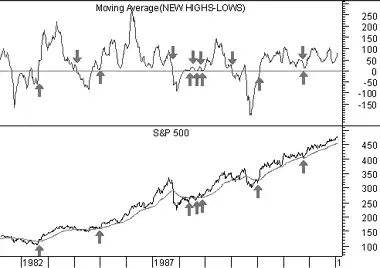

The New Highs-New Lows indicator ("NH-NL") displays the daily difference between the number of stocks reaching new 52-week highs and the number of stocks reaching new 52-week lows.
You can interpret the NH-NL indicator as a divergence indicator or as an oscillator. I usually plot a 10-day moving average of the NH-NL indicator to smooth the daily values.
DivergenceThe NH-NL indicator generally reaches its extreme lows slightly before a major market bottom. As the market then turns up from the major bottom, the indicator jumps up rapidly. During this period, many new stocks are making new highs because it's easy to make a new high when prices have been depressed for a long time.
As the cycle matures, a divergence often occurs as fewer and fewer stocks are making new highs (the indicator falls), yet the market indices continue to reach new highs. This is a classic bearish divergence that indicates that the current upward trend is weak and may reverse.
OscillatorThe NH-NL indicator oscillates around zero. If the indicator is positive, the bulls are in control. If it is negative, the bears are in control. You can trade the NH-NL indicator by buying and selling as the indicators passes through zero. This won't always keep you on the right side of the market, but it is helpful to confirm the current trend.
The following chart shows the S&P 500 and a 10-day moving average of the NH-NL indicator.
 I used the NH-NL indicator to confirm a traditional moving average trading system. I drew "buy" arrows when the S&P 500 rose above its 50-day moving average, but only if the 10-day moving average of the NH-NL indicator was above zero. I drew "sell" arrows anytime the S&P 500 fell below its moving average.By ignoring buy signals unless the 10-day moving average of the NH-NL indicator was above zero, I reduced the number of trades by 50% and increased profits by 9%.
The New Highs-New Lows is calculated by simply taking the difference between the number of stocks that made new 52-week highs and the number of stocks that made new 52-week lows. I usually plot a 10-day moving average of this value.